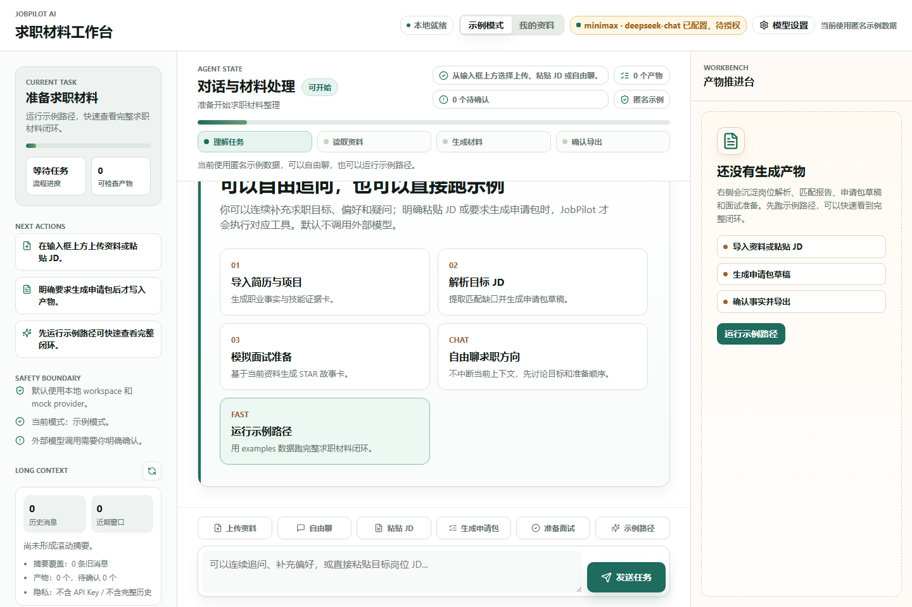
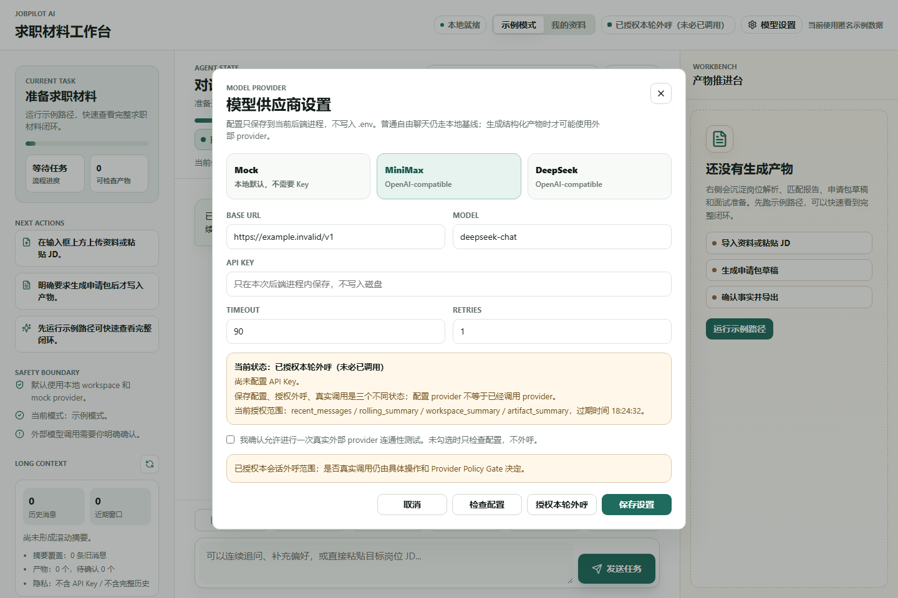
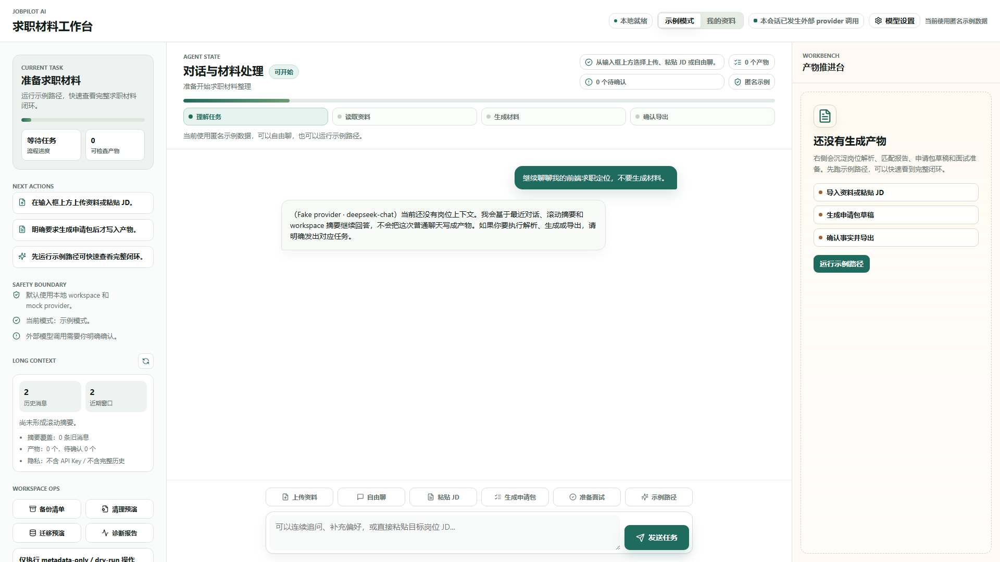

目标架构
- Chatbox Experience Shell 展示 provider 状态、授权、长对话上下文、workspace 生命周期和推进台
- FastAPI 提供 provider status/preferences/consent、chat message、chat context、workspace lifecycle 和 diagnostics routes
- Chat Orchestrator 仅在 provider_opt_in 且 consent 有效时进入 provider-backed free chat，否则 local fallback
- Provider Policy Gate 默认拒绝未授权外呼；configured、consented、called、failed、fallback 不混淆
- Long Context Manager 通过 recent window、rolling summary、workspace snapshot 和 retrieved blocks 保持 bounded context
- Workspace Lifecycle 仅执行 metadata-only backup、cleanup dry-run、migration dry-run 和 redacted diagnostics
当前实现
- P6-M1 provider 设置和授权入口已在 UI 与 API 中可见
- P6-M2 本轮验收使用 JOBPILOT_ENABLE_FAKE_PROVIDER_CHAT=1，不执行真实 MiniMax/DeepSeek/OpenAI-compatible 外呼
- P6-M3 Long context 面板展示消息计数、滚动摘要、workspace 产物计数和隐私边界
- P6-M4/M5 provider_chat_invocation 记录脱敏元数据，普通聊天不写 artifact，工具意图回到 Domain Tools
- P7 Workspace ops 面板可触发备份清单、清理预演、迁移预演和脱敏诊断
- 本报告不证明真实个人资料路径、真实 provider 质量、SaaS GA、workspace 删除或迁移 apply
自动化步骤
| # | 步骤 | 动作 | 结果 |
|---|---|---|---|
| 1 | 打开 Chatbox 工作台 | goto | passed |
| 2 | 等待首页渲染 | waitText | passed |
| 3 | 桌面初始状态与目标工作台 | screenshot | passed |
| 4 | 打开模型设置 | clickText | passed |
| 5 | 等待模型设置弹窗 | waitText | passed |
| 6 | 模型设置展示 configured/consent 边界 | screenshot | passed |
| 7 | 授权本轮外呼 | clickText | passed |
| 8 | 等待授权提示 | waitText | passed |
| 9 | Provider 已授权但未必调用 | screenshot | passed |
| 10 | 关闭模型设置 | clickText | passed |
| 11 | 输入 provider-backed 自由聊天 | fill | passed |
| 12 | 发送 provider-backed 自由聊天 | clickText | passed |
| 13 | 等待 fake provider 回复 | waitText | passed |
| 14 | Fake provider-backed 回复与 Long context | screenshot | passed |
| 15 | 生成备份清单 | clickText | passed |
| 16 | 等待备份清单 | waitText | passed |
| 17 | Workspace backup manifest-only | screenshot | passed |
| 18 | 执行清理预演 | clickText | passed |
| 19 | 等待清理预演 | waitText | passed |
| 20 | Cleanup dry-run 证据 | screenshot | passed |
| 21 | 执行迁移预演 | clickText | passed |
| 22 | 等待迁移预演 | waitText | passed |
| 23 | Migration dry-run 证据 | screenshot | passed |
| 24 | 生成诊断报告 | clickText | passed |
| 25 | 等待诊断报告 | waitText | passed |
| 26 | Diagnostics metadata-only 证据 | screenshot | passed |
| 27 | 宽屏重新打开 | goto | passed |
| 28 | 等待宽屏首页 | waitText | passed |
| 29 | 1920px 宽屏可视度 | screenshot | passed |
| 30 | 移动端重新打开 | goto | passed |
| 31 | 等待移动端首页 | waitText | passed |
| 32 | 390px 移动端可视度 | screenshot | passed |
验收标准
- 默认不把 provider configured 写成 called
- 授权外呼和真实调用状态可区分
- fake provider-backed 普通聊天不写 artifact
- Long context 面板展示 recent window、rolling summary、workspace snapshot 和隐私边界
- workspace backup/cleanup/migration/diagnostics 均不执行删除或迁移 apply
- 中文报告包含目标架构、当前实现、用户路径、截图证据、测试结果、PRD 规格检视和未验证范围
命令结果
| 命令 | 状态 | 证据 |
|---|---|---|
.venv/bin/python -m pytest | passed | 100 passed, 1 warning in 89.72s |
npm --prefix apps/chatbox run build | passed | tsc && vite build passed |
git diff --check | passed | no whitespace errors |
drawio XML parse | passed | drawio parse ok |
concept consistency scan | passed | no positive false-acceptance claims found; matches are boundary/negative statements |
PRD 规格检视
| PRD / Gate 要求 | 证据 | 结论 |
|---|---|---|
| 原始 PRD：本地优先求职 Agent 能完成资料、JD、匹配、申请材料和面试准备路径 | 100 passed 全量回归覆盖 P0-P5 基线；本轮未破坏既有导入、解析、匹配、导出和会话恢复测试 | pass |
| P6 provider 默认安全 | provider opt-in 测试、模型设置截图、consent_required fallback；configured_is_called=false | pass |
| P6 provider-backed chat 可控且可降级 | fake provider 成功、timeout fallback、20 轮 bounded context 测试；真实 provider 未执行 | pass for fake provider path |
| P6 Tool Safety | 普通 provider-backed chat artifacts=[]；JD 工具意图 skipped_tool_intent 并走 Domain Tools | pass |
| P6 Privacy / Redaction | provider_chat_invocation 不含 API Key、完整 prompt、完整资料或 raw response；报告列出未验证范围 | pass |
| P7 Workspace Lifecycle | backup manifest-only、cleanup dry-run、migration dry-run、diagnostics metadata-only 测试与截图 | pass for non-destructive path |
| P7-post P5-REAL 复验边界 | 文档和报告均声明未读取真实个人资料，synthetic/examples 不能替代真实资料复验 | not executed by design |
代码检视
| 区域 | 结论 | 级别 |
|---|---|---|
| Provider-backed chat | adapter 默认 fake/disabled；真实 provider chat 需要显式环境开关、有效 consent 和后端配置，未发现默认外呼路径。 | pass |
| Provider logs | provider_chat_invocation 记录脱敏元数据、状态、fallback、错误类型和 token 估算；不记录 API Key 或 raw response。 | pass |
| Tool safety | 自由聊天和工具意图分支分离；普通 provider-backed chat 不写 artifact，工具意图回到 Domain Tools。 | pass |
| Workspace lifecycle | backup 为 manifest-only；cleanup/migration 均为 dry-run；未实现 destructive apply。 | pass |
| Residual risk | 真实 provider 输出质量、真实个人资料复验和 destructive workspace 操作仍未验证，应保持高风险确认门。 | warning |
文档审计
| 区域 | 结论 | 状态 |
|---|---|---|
| 原始 PRD 与 active PRD | 当前文档保留 v1.0 产品背景，并将 P6/P7 明确限定为本地优先、opt-in provider 和 Beta 基线。 | pass |
| 概念一致性 | configured、consented、called、fallback、P5-REAL、P7 Beta、SaaS GA 的概念边界在 README/TODO/active docs/report 中保持区分。 | pass |
| 虚假验收防护 | 文档明确 fake provider 不代表真实 provider 质量，合成资料不代表真实个人资料路径。 | pass |
| 未验证范围 | 报告列出真实 provider、真实资料、workspace delete/apply、SaaS/ASR/会议平台/自动投递未验证。 | pass |
截图证据

evidence/p6p7_stage_acceptance/stage-desktop-initial.png
evidence/p6p7_stage_acceptance/stage-provider-settings.png
evidence/p6p7_stage_acceptance/stage-provider-consented.png
evidence/p6p7_stage_acceptance/stage-fake-provider-chat.png
evidence/p6p7_stage_acceptance/stage-workspace-backup.png
evidence/p6p7_stage_acceptance/stage-cleanup-dry-run.png
evidence/p6p7_stage_acceptance/stage-migration-dry-run.png
evidence/p6p7_stage_acceptance/stage-diagnostics.png
evidence/p6p7_stage_acceptance/stage-wide-1920.png
evidence/p6p7_stage_acceptance/stage-mobile-390.png未验证范围与审计意见
- 未执行真实 MiniMax、DeepSeek 或 OpenAI-compatible provider 外呼
- 未读取或验收用户真实个人资料
- 未执行 workspace 删除、清空、cleanup apply 或 migration apply
- 未实现 SaaS、多租户、Billing、ASR、会议平台、自动投递、MCP/CLI
- 未声明真正无限 token、无限上下文或无限成本对话
- 未进行人工体验评分，本报告只支持自动化候选进入人工审查
阶段性验收结论：自动化候选通过，可进入人工体验审查；现实评价为本地 P6+P7 Beta 候选 READY FOR HUMAN REVIEW，不是 production/SaaS ready。